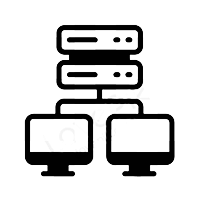

Artificial Intelligence:
Artificial Intelligence (AI) is a field
of computer science that focuses
on creating intelligent systems
capable of performing tasks that
would typically require human intelligence.
It involves developing algorithms
and models that enable machines to
perceive, reason, learn, and make decisions.
AI encompasses various subfields
including machine learning natural language processing
computer vision, robotics and expert systems.
These technologies have seen significant advancements in recent years
fueled by increased computational power, access to massive amounts of data
and improvements in algorithmic techniques.
Full-stack programming refers to the ability to work on both
the front-end and back-end aspects of a web application.
A full-stack developer is proficient in multiple
programming languages and frameworks
enabling them to handle the entire development
process, from designing the user interface
to managing the server-side logic
and database interactions.
One of the key advantages
of full-stack programming is the versatility it offers.
Full-stack developers have a comprehensive understanding of the entire application stack
allowing them to tackle various tasks independently.
They can seamlessly switch between working on client-side
technologies, such as HTML, CSS, and JavaScript, and server-side technologies like Node.
js, Python, or Ruby on Rails. This versatility is particularly valuable in small to
mid-sized companies or startups where resources may be limited
and a developer is expected to wear multiple hats.

Computer communication refers to the exchange
of information and data between computers
or computing devices.
It plays a crucial role in enabling connectivity
and facilitating the flow of data across networks.
Whether it's sharing files, sending emails
browsing the internet, or participating in online
video conferences, computer
communication allows individuals and organizations
to communicate, collaborate, and access resources remotely.
One of the fundamental components of
computer communication is the concept of protocols.
Protocols define a set of rules and standards that govern how data
is transmitted, received, and interpreted by computers.
They ensure that different devices can communicate effectively and understand each other's messages.
Examples of widely used protocols include the Internet Protocol (IP),
Transmission Control Protocol (TCP), and Hypertext Transfer Protocol (HTTP).
Cybersecurity is a critical field that focuses on
protecting computer systems, networks
and data from unauthorized access, theft
damage, or disruption. In today's interconnected
world, where information is exchanged
and stored digitally, the
importance of cybersecurity cannot be overstated.
The rapid advancement of technology
has brought about numerous benefits
but it has also introduced new risks and vulnerabilities.
Cybercriminals are constantly evolving their tactics, seeking to exploit
weaknesses in computer systems and networks for their personal gain.
This has led to a rise in various cyber threats, such as hacking, malware
phishing, and identity theft, among others.
Assembly language is a low-level programming language that provides
a bridge between machine code and higher-level programming languages.
It is often used in the development of system software
device drivers, and embedded systems, where direct
control over the hardware is required.
In assembly language, instructions are written
using mnemonic codes that correspond to
specific machine instructions.
One of the main advantages of assembly
language is its close correspondence to the underlying hardware architecture. Assembly instructions are directly mapped to machine instructions, allowing programmers to have fine-grained control over the execution of their programs. This level of control is particularly important in areas where performance and efficiency are crucial.
Java is a versatile and widely used programming language that was developed by James Gosling and his team at Sun Microsystems (now owned by Oracle) in the mid-1990s. It was designed to be a platform-independent language, allowing developers to write code once and run it on any device or operating system that supports Java. One of the key features of Java is its "write once, run anywhere" capability. This is achieved through the Java Virtual Machine (JVM), which serves as an intermediary between the Java code and the underlying hardware. When Java code is compiled, it is converted into bytecode, which can then be executed by the JVM. This abstraction layer enables Java programs to be platform-independent, as long as a compatible JVM is available.